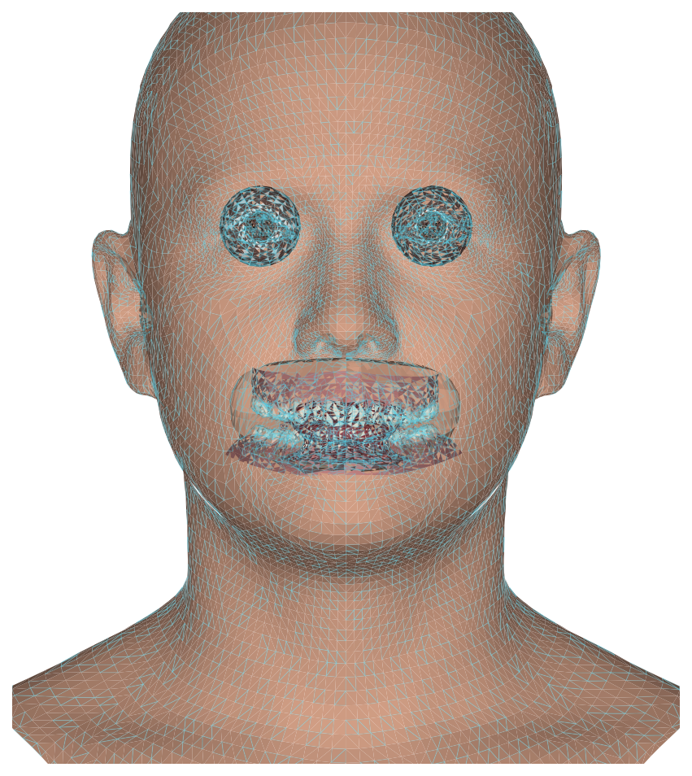

Lighting, framing, pose and expression are scored live on-device. What passes becomes a live persona in your headset.
Start a captureThe phone walks you through framing, lighting and six prompted expressions. VisionCamera streams frames to a GPU worklet — nothing touches the JS thread.
front camera · yuvEvery frame is scored against five typed gates. A failed gate names itself, so the guide can say exactly what to fix — never a bare rejection.
lighting · pose · stabilityPassing frames fit Google's open GNM Head V3 parametric model — 253 identity + 383 expression coefficients, solved jointly across poses.
Apache-2.0 · 17,821 vertsThe sealed bundle crosses to the headset over an acknowledged channel. Processing starts only after the receiver confirms — recapture never loses your current avatar.
acknowledged handoffExpression coefficients drive the rigged head every frame. The same pipeline that rendered the preview animates you in the headset.
expression-drivenThe capture screen is the product. It shows the live gate verdicts, names the step you're on, and never lets a bad frame through silently.
The SDK is Apache-clean where the model is, honest about what it measures, and built to be dropped into a React Native app with Nitro modules and VisionCamera.
Try the capture flow